|
|
| hermit crabs text index | photo index |
| Phylum Arthropoda > Subphylum Crustacea > Class Malacostraca > Order Decapoda > Anomurans |
| Hermit
crabs Infraorder Anomura updated Jan 2020
Where seen? Hermit crabs are commonly seen on many of our shores. They come in all sizes from tiny to large, and live in all kinds of shells. The same kind of hermit crab may live in different kinds of empty shells. Hermit crabs may live even in broken shells. What are hermit crabs? Hermit crabs belong a subgroup called Anomurans in the Order Decapoda. Anomurans includes porcelain crabs. These crab-like animals are not true crabs. True crabs belong to a subgroup called Brachyurans within the Order Decapoda. Features: True crabs have a hard, shortened abdomen which they fold under their hard shells for protection. Hermit crabs, on the other hand, have a soft, long abdomen. They have to insert this abdomen into an empty shell for protection. The soft abdomen is twisted to one side for a better fit into the spiral of a shell. There are appendages at the end of the abdomen to hang on tight to the shell. Unlike true crabs, hermit crabs have only two pairs of walking legs. They have eyes on long stalks to peek out of the shell. Their antennae may be very long, or feathery. Like true crabs, hermit crabs have two pincers. Both are used to feed with, and usually one is used to block the shell entrance when the hermit crabs retreats into its shell. This makes it more difficult for predators to pry them out of their shells. In some species, one of the pincers is much larger than the other. |
|
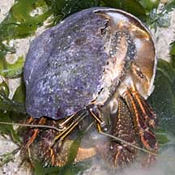 Changi, May 11 |
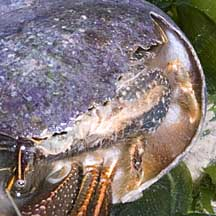 This hermit crab is using a half broken shell. |
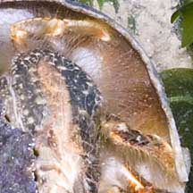 Small 'legs' on the abdomen cling to the shell. |
| Empty shells are priceless! Hermit
crabs need empty shells to protect themselves, so please don't take
any shells home with you. Hermit crabs need them more than you do!
They will die without empty shells. Hermits belong in their shells:Please don't try to pull hermit crabs out of their shells. You may rip out their little appendages or tear their delicate abdomens. |
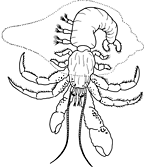 What it looks like inside the shell! |
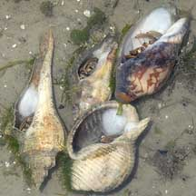 The same kind of hermit crab can live in a wide variety of shells. Chek Jawa Feb 07 |
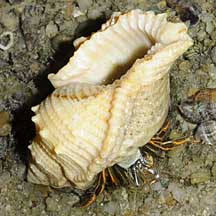 Even a broken shell can be a hermit home. Tanah Merah, Jun 09 |
| House hunting: As a hermit crab
grows bigger, it has to find a bigger shell. A shell that is too small
provides less effective protection from predators as the hermit crabs
can't retreat deep into the shell. Hermit crabs understood the concept
of 'upgrading' long before other Singaporeans! Before switching shells, a hermit crab will tentatively test out the new shell first, while holding on to the old one. If the new shell is not ideal, it instantly goes back into the old shell. A hermit crab does not necessarily always use the same kind of shell. Hermit crabs never kill the original occupant of the shell. They may, however, quarrel with other hermit crabs over a desirable shell. Every shell is a potential hermit crab home. Even a tiny broken shell or an ugly shell covered with barnacles. One of the factors limiting the population of hermit crabs is the availability of suitable empty shells. So please don't take any shells away from our shores. More about hermit crabs moving into a new shell on the wild shores of singapore blog. |
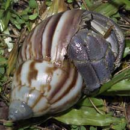 Land hermit crabs may even live in land snail shells! St. John's Island, Jun 07 |
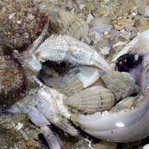 Hanging onto the shell of a snail so recently dead that whelks are still cleaning it out! Tanah Merah, Feb 07 |
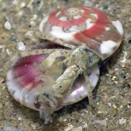 Even tiny Button shells are homes to tiny hermit crabs. Changi, Apr 05 |
| Living with a hermit: The hermit crab makes such a comfy home in its borrowed shell that other animals take up residence with it. These include the Slipper snail (Family Crepidulidae), tiny porcelain crabs and sea anemones. These animals enjoy the constant flow of oxygenated water that the hermit crab generates, snack on the hermit crab's leftovers, and the hermit crab will hide in the sand or crevices where its safe and wet so the hitch-hikers don't risk drying out. |
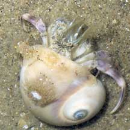 Tiny sea anemones may be found on a shell occupied by a hermit crab. Changi, Apr 07 |
 Others may have big sea anemones! Changi, Apr 07 |
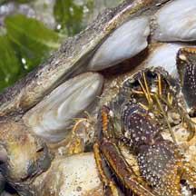 Slipper snails are often found on the inside of the shell occupied by a hermit crab. Changi, Apr 05 |
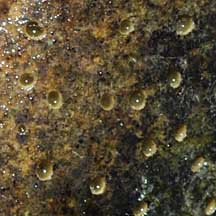 Little animals also bore into the shell, possibly boring sponges. Changi, Aug 08 |
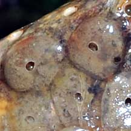 Unknown animal on the shell. Changi, Aug 08 |
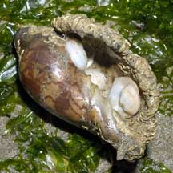 Slipper snails and keelworms Changi, Jun 05 |
| What do they eat? Many hermit
crabs are scavengers. These have a keen sense of smell to find their
food. Others eat algae and detritus. Hermit babies: Hermit crabs have separate genders. To mate, hermits crabs partially emerge from their shells, releasing eggs and sperm simultaneously. The eggs hatch into free-swimming larvae that drift with the plankton before eventually settling down and developing into tiny hermit crabs. Some hermit crab females may brood their eggs inside their shells. |

| Hermit crabs belong on the seashore! Please don't take hermit crabs home. And please don't buy one from a pet store. Hermit crabs sold in a pet store are collected from the wild. Many have died during the collection process, before they are even sold. And many of those sold also eventually die from neglect or ignorance of proper care. For example, within the confinement of a small tank, most die during a moult. In the wild, they are able to find the correct place to moult, with the proper high humidity. More about moulting. |
 Moult outside the shell, original hermit crab inside the shell? Changi, Jul 05 |
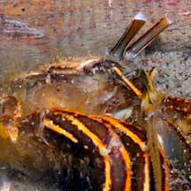 Transparent eyes indicates this is a moult. |
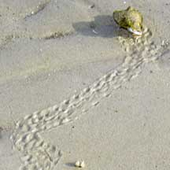 Hermit crab tracks on sand. Chek Jawa, Jan 04 |
| Even if they are kept alive for a long time, hermit crabs removed
from the habitat generally do not reproduce successfully. Thus, they
do not contribute to the wild population. Other animals rely on hermit
crabs as homes and as food. Removing wild hermit crabs hurts the ecosystem. If you have bought a pet hermit crab and now feel bad about keeping it, please do not release it on our shores. It may not be the same species as those naturally found on our shores. It may have diseases that may be passed on to our marine life. The least worst option would be to return it to the pet shop where you bought it from. If you enjoy looking at hermit crabs, why not visit them on the shore and observe them in their natural surroundings doing what hermit crabs do? |
|
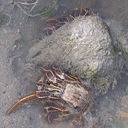 Just moulted. Tuas, Sep 11 |
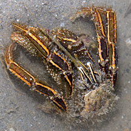 Moult with transparent eyes. Tuas, Sep 11 |
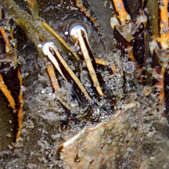 |
| Special hermits: Land hermit
crabs belong to the Family Coenobitidae which includes the largest
hermit crab: the Robber or Coconut crab (Birgus latro). The
Robber crab is so large that it no longer needs to live in an empty
snail shell for protection. The Robber crab is only found in the Indian
and Pacific Ocean islands. It is not found in Singapore. Role in the ecosystem: Hermit crabs are eaten by many animals higher up in the food chain. Bigger crabs and birds can pry them out of their shells to eat them. Many small animals live with hermit crabs (see above). Many hermit crabs are scavengers and help quickly recycle dead matter on the shores. Status and threats: The Land hermit crabs (Coenobita sp.) are listed as 'Vulnerable' on the Red List of threatened animals of Singapore due to loss of our natural beaches. As for our other hermit crabs, like other creatures of the intertidal zone, they are affected by human activities such as reclamation and pollution as well as over-collection for the pet trade and by hobbyists. |
| Some Hermit crabs on Singapore shores |


| Unidentified hermit crabs on Singapore shores |
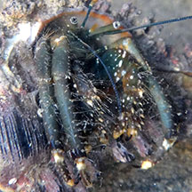 Tanah Merah Ferry Terminal, Aug 12 |
| Hermit
crabs recorded for Singapore from Dwi Listyo Rahayu, 2000. Hermit crabs from the South China Sea (Crustacea: Decapoda: Anomura: Diogenidae, Paguridae, Parapaguridae) in red are those listed among the threatened animals of Singapore from Davison, G.W. H. and P. K. L. Ng and Ho Hua Chew, 2008. The Singapore Red Data Book: Threatened plants and animals of Singapore. *from Lim, S., P. Ng, L. Tan, & W. Y. Chin, 1994. Rhythm of the Sea: The Life and Times of Labrador Beach. **from WORMS +Other additions (Singapore Biodiversity Records, etc) ++from The Biodiversity of Singapore, Lee Kong Chian Natural History Museum.
|
Links
References
|